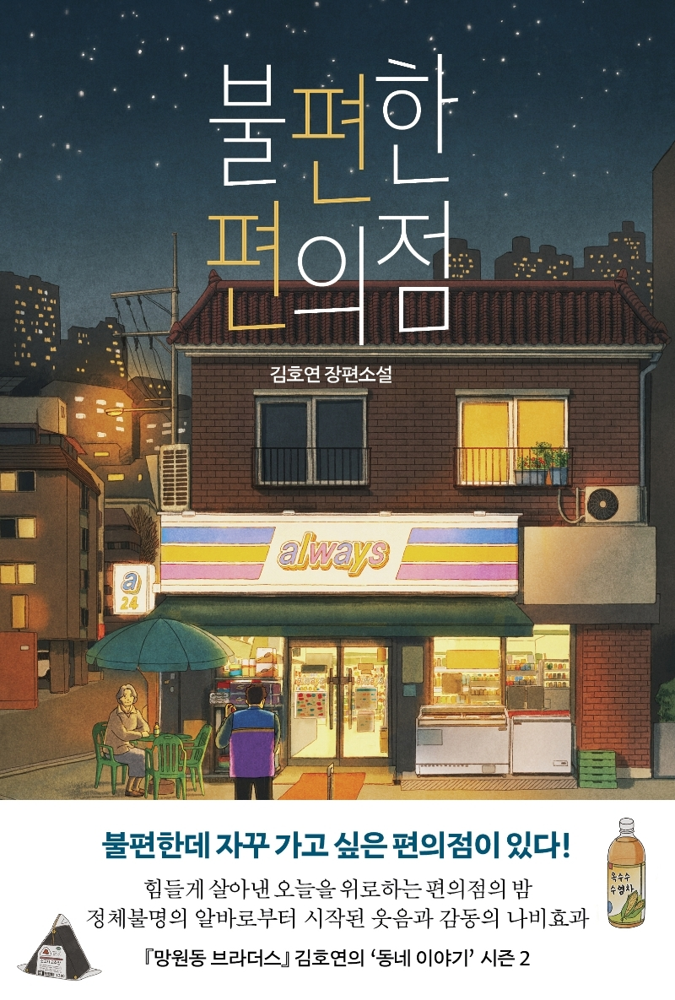
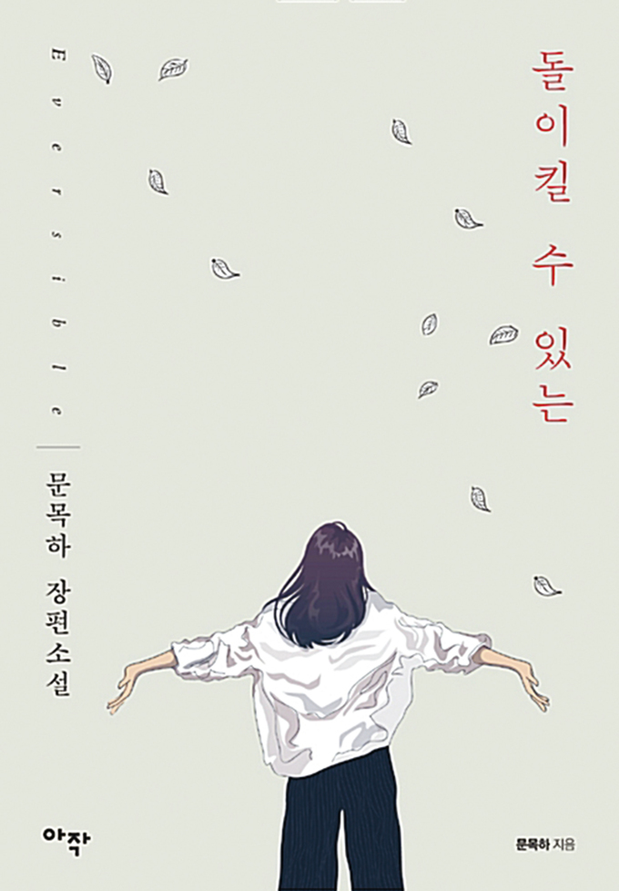
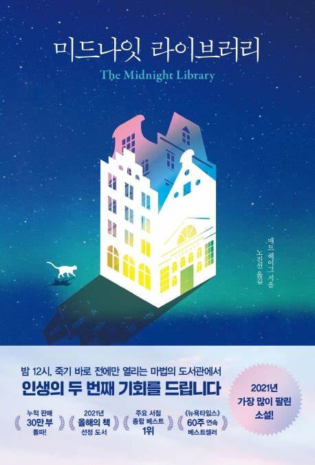

healing
book
불편한 편의점
나만의 별점: 별 다섯개 작가: 김호연 출판사: 나무옆의자
불편한데 자꾸 가고 싶은 편의점이 있다!
힘들게 살아낸 오늘을 위로하는 편의점의 밤
정체불명의 알바로부터 시작된 웃음과 감동의 나비효과
동네 골목의 작은 편의점을 배경으로 삶의 희로애락을 따뜻하고 유머러스하게 그린 소설. 서울역에서 살다가 우연한 기회에 편의점에서 일하게 된 한 인물과 저마다의 사연을 안고 편의점을 찾는 이들의 이야기, 그 속에서 지친 하루를 위로하는 편의점의 밤이 열린다.
돌이킬 수 있는
나만의 별점: 별 다섯개 작가: 문목하 출판사: 아작
부패경찰과 정체불명의 불법 조직 사이에서 벌어지는 첩보와 배신,
초능력물과 누아르를 매력적인 캐릭터와 대사로 녹여낸 소설다운 소설
미드나잇 라이브러리
나만의 별점: 별 네개 반 작가: 매트 헤이그 출판사: 인플루엔셜
밤 12시, 죽기 바로 전에만 열리는 마법의 도서관에서 인생의 두 번째 기회를 드립니다
<삶과 죽음 사이, 마법의 도서관이 열린다>죽기로 결심한 주인공 노라, 다시 눈을 뜬 그 앞에 펼쳐진 공간은 밤 12시, 죽기 전에만 열리는 ‘미드나잇 라이브러리’다. 이 신비한 도서관에서 노라는 과거의 선택에 따라 자신이 살았을 수도 있는 여러 삶을 경험하게 되는데, 그곳에서 그는 완벽한 삶을 찾을 수 있을까? 완벽한 삶은 있을까?